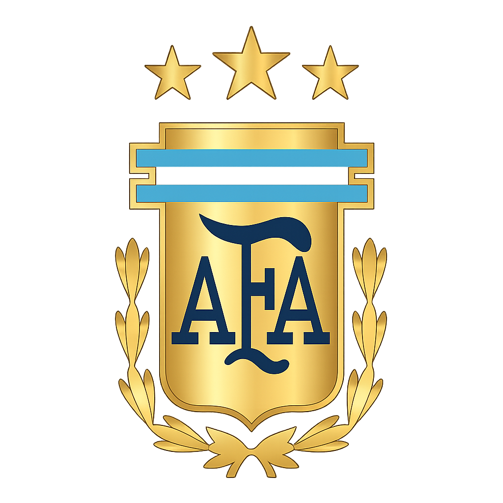
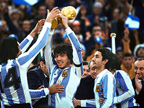

|


Made By Oznium Studios
#This is an unofficial fan-made website created by Oznium Studios for Argentina supporters. It is not affiliated with FIFA or the Argentine Football Association (AFA).
1st World Cup: June 25, 1978

Argentina won its first FIFA World Cup in 1978, defeating the Netherlands 3-1 in extra time on June 25, 1978, at the Estadio Monumental in Buenos Aires. The tournament's top scorer, Mario Kempes, was the standout player of the final, scoring two of Argentina's goals.
2nd World Cup: June 29, 1986

Argentina won its second FIFA World Cup title on June 29, 1986, defeating West Germany 3-2 in the final at the Estadio Azteca in Mexico City. Captained by Diego Maradona, who won the Golden Ball as the tournament's best player, the team remained undefeated throughout the tournament.
3rd World Cup: December 18, 2022

Argentina won their third FIFA World Cup on December 18, 2022, defeating France 4-2 in a penalty shootout after a thrilling 3-3 draw at the Lusail Stadium in Qatar. This victory was led by captain Lionel Messi and marked their first world title since 1986.
🥈 FIFA World Cup Runners-up - 3 times
🏆 Copa América Champions - 16 Titles
🌍 CONMEBOL–UEFA Cup of Champions / Finalissima - 2 times
🏅 FIFA Confederations Cup - 3 times
🏆 Panamerican Championship - 1 time
🏆 Kirin Cup - 1 time
🏆 Artemio Franchi Trophy - 1 time
🏅 Olympic Games (Men's Football) - 4 times
==> Gold Medal 🥇 - 2 times
==> Silver Medal 🥈 - 2times
🏆 FIFA U-20 World Cup - Record 6 Titles
🏆 FIFA U-17 World Cup - 3 times
🏆 South American U-20 Championship - 5 times
🏆 South American U-17 Championship - 4 times